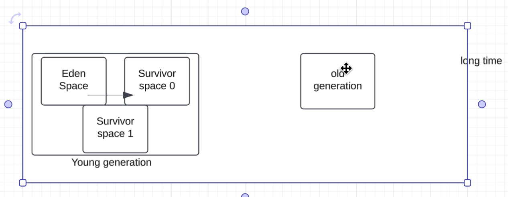

This is the foundation of Java Garbage Collection.
Small holes between objects
Hard to allocate big objects later
This solves the main problem of Mark & Sweep
Same as before
Delete garbage objects
Used in Young Generation

Instead of deleting garbage
👉 Copy only alive objects
Garbage is ignored
Young Generation:
1.Objects created in Eden
2.Minor GC runs
3.Alive objects copied:
4.Eden cleared completely ✅
Reduce long pause time of Old Gen GC.
| GC Algorithm | Applied in Young Generation? | Applied in Old Generation? |
|---|---|---|
| Mark & Sweep | ❌ No | ✅ Yes (historically / conceptually) |
| Mark, Sweep & Compact | ❌ No | ✅ Yes |
| Copying Algorithm | ✅ Yes | ❌ No |
If Young Gen uses Copying and Old Gen uses Mark–Sweep–Compact, how do objects move from Young Generation to Old Generation?
The answer is:
Each object has an age counter (not reference count).
Age = number of Minor GCs survived
An object is promoted to Old Generation when ANY ONE of these conditions is true 👇
JVM has a parameter:
Default value: 15
Meaning:
If an object survives 15 minor GCs, it moves to Old Gen
If Survivor space does not have enough space:
👉 JVM directly promotes object to Old Gen
Let’s not talk theory — let’s talk what breaks in production.
Traditional GC sees Old Gen like this:
When Old Gen is full or fragmented:
👉 GC must:
Example:
Traditional GC:
⏳ Pause = seconds
For:
Traditional GC cannot answer this:
It doesn’t know.
It just:
If promotion fails or memory is fragmented:
Even if:
Traditional GC:
G1 GC:
Example:
Each region can be:
G1 tracks:
Example:
Instead of:
G1 says:
You can tell G1:
G1 calculates:
Traditional GC cannot do this.
Traditional:
G1:
Important point:
G1 does NOT invent new algorithms.
It still uses:
Traditional:
G1:
For some systems, even 100–200 ms pause is too much:
That’s it.
That’s the breakthrough.
It existed in:
Before understanding PermGen, first understand what kind of data the JVM stores.
When JVM loads a class, it must store:
✅ JVM needed a separate memory area for this.
PermGen was inside the JVM-managed memory, alongside the heap.
Very important.
When does PermGen grow?
Whenever JVM:
Example:
This is a key point.
ClassLoader → loads classes
PermGen → stores metadata
ClassLoader unreachable
↓
GC detects it
↓
Classes unloaded
↓
PermGen memory freed ✅
PermGen had ONE MAJOR DESIGN FLAW.
It had a fixed maximum size.
Controlled by:
If you didn’t size it correctly → 💥
Modern Java apps:
They:
This error:
Oracle realized:
This is why Metaspace:
(Spring, Hibernate, proxies)
Metaspace is managed by GC, but differently.
GC does class unloading, not object deletion.
Metadata is freed ONLY IF: